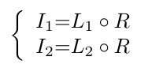

PairLIE论文详解
论文为2023CVPR的Learning a Simple Low-light Image Enhancer from Paired Low-light Instances.论文链接如下：
openaccess.thecvf.com/content/CVPR2023/papers/Fu_Learning_a_Simple_Low-Light_Image_Enhancer_From_Paired_Low-Light_Instances_CVPR_2023_paper.pdf
出发点
1.However, collecting high-quality reference maps in real-world scenarios is time-consuming and expensive.
出发点1：在低光照领域，从现实世界中获取高质量的参考照片进行监督学习，既费时又困难，成本昂贵。
因为获得低光环境的照片是容易的，而此低光照片对应的亮度较大的参考图片是难得的。
2.To tackle the issues of limited information in a single low-light image and the poor adaptability of handcrafted priors, we propose to leverage paired low-light instances to train the LIE network.
Additionally, twice-exposure images provide useful information for solving the LIE task. As a result, our solution can reduce the demand for handcrafted priors and improve the adaptability of the network.
出发点2：为了解决手动设置的先验的低适应性，减少手动设置先验的需求，同时提升模型对陌生环境的适应性。
创新点
The core insight of our approach is to sufficiently exploit priors from paired low-light images.
Those low-light image pairs share the same scene content but different illumination. Mathematically, Retinex decomposition with low-light image pairs can be expressed as:

创新点1：作者利用两张低光图片进行训练，以充分提取低光图片的信息。
instead of directly imposing the Retinex decomposition on original low-light images, we adopt a simple self-supervised mechanism to remove inappropriate features and implement the Retinex decomposition on the optimized image.
创新点2：作者基于Retinex理论，但是并不循旧地直接运用Retinex的分解。作者采用一个简单的自监督机制以实现不合理特征的去除（通常是一些噪音）以及更好地实现Retinex理论。
模型

将两张同一场景不同曝光的低光图片送入训练中，图片I1与I2先经过P-Net去除噪音，得到i1与i2，然后利用L-Net与R-Net分解为照度L1与反射R1（对应有L2与R2）。
在测试，只需要输入一张低光照图片I，经过P-Net的噪音去除，得到i，然后用L-Net与R-Net分解为照度和反射，然后对照度L进行增强，操作为g(L)，把增强结果与反射R进行元素乘法，得到增强后的图片Enhanced Image。
设计及其损失
Note that, this paper does not focus on designing modernistic network structures. L-Net and R-Net are very similar and simple,
1.模型使用的L-Net与R-Net十分简单。整体架构只是单纯的卷积神经网络。
Apart from L-Net and R-Net, we introduce P-Net to remove inappropriate features from the original image. Specifically, the structure of the P-Net is identical to the R-Net.
2,P-Net被设计用于去除不合理特征。
Note that the projection loss needs to cooperate with the other constraints to avoid a trivial solution.i,e.,i1 = I1.
3.Projection Loss：最大程度限制去除不合理特征后的i1和原始低光图片I1的区别。
这个损失需要避免一个特例，即降噪后图片与原图相同，即未降噪。
Since sensor noise hidden in dark regions will be amplified when the contrast is improved.
In our method, the sensor noise can be implicitly removed by Eq. 1.
4.Reflection Loss：通常用传感或摄影设备拍摄低光场景照片会携带一定的设备噪音，这个损失最大限度保证两张图片的反射是相同的，减少传感或摄影设备的影响，这是因为图片场景的内容相同。
这个损失是确保反射的一致性。
$\mid\mid R \circ L - i \mid\mid^2_2$is applied to ensure a reasonable decomposition.
$\mid\mid R - i / stopgrad(L) \mid\mid^2_2$ is to guide the decomposition.
Specifically, the initialized illumination L0 is calculated via the maximum of the R, G, and B channels：$L_0 = \underset{c \in{R, G, B}}{max} I^c(x).$
5.Retinex Loss：Retinex损失是为了限制分解组块L-Net和R-Net以满足Retinex的理论要求。
本文毕